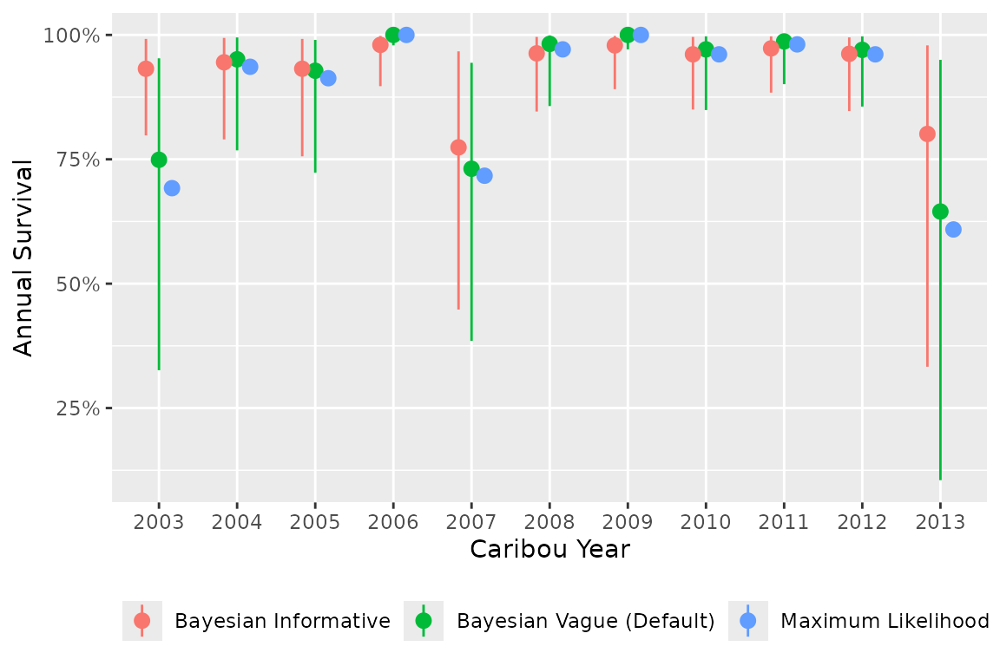

A prior distribution represents the existing uncertainty in the value
of an unknown parameter. The influence of a prior on the posterior
distribution will decrease as the number of observations increases.
bboutools uses weakly informative priors by default (Gelman, Simpson, and Betancourt 2017; McElreath
2016).
If the user is interested in fitting models without priors, see
bb_fit_recruitment_ml() and
bb_fit_survival_ml(), which have identical models but use a
frequentist approach (Maximum Likelihood) to parameter estimation.
Models fit with Maximum Likelihood are equivalent to Bayesian models
with completely uninformative priors (McElreath
2016).
Survival
Given the full model, the expected survival probability for the i^{th} year and j^{th} month is \text{logit}(Survival[i,j]) = b0 + bAnnual[i] + bMonth[j] + bYear \cdot Year[i] Where bAnnual can be a fixed or random effect of categorical year on the intercept on the log-odds scale and Year is the scaled continuous year.
This model has the following default priors in
bboutools
- Intercept (log-odds scale) b0 \sim Normal(3, sd = 10)
- Year fixed effect bAnnual[i] \sim Normal(0, sd = 10)
- Year random effect
sAnnual \sim Exponential(1) \\ bAnnual \sim Normal(0, sd = sAnnual)
Month random effect sMonth \sim Exponential(1)\\ bMonth \sim Normal(0, sd = sMonth)
Year continuous effect bYear \sim Normal(0, sd = 2)
Recruitment
Given the full model, the expected recruitment (calves per adult female) for the i^{th} year is logit(Recruitment[i]) = b0 + bAnnual[i] + bYear \cdot Year[i] where bAnnual can be a fixed or random effect of categorical year on the intercept on the log scale and Year is the scaled continuous year.
The model has the following default priors in
bboutools
Intercept (log-odds scale) b0 \sim Normal(-1, sd = 5)
Categorical year fixed effect bAnnual[i] \sim Normal(0, sd = 5)
Categorical year random effect sAnnual \sim Exponential(1)\\ bAnnual \sim Normal(0, sd = sAnnual)
Continuous year effect bYear \sim Normal(0, sd = 2)
The recruitment model can also estimate the adult female proportion from observed Cows and Bulls Cows = adult\_female\_proportion \cdot (Cows + Bulls) Where the default prior for adult\_female\_proportion has a mode of 65% adult\_female\_proportion \sim Beta(65, 35)
Prior selection and influence
As an example of the influence of priors on parameter estimates, we tighten the standard deviation for the fixed effect of categorical year on the intercept of monthly survival probability. The equivalent maximum likelihood model is also fit for comparison.
set.seed(1)
data <- bboudata::bbousurv_c
# force model to fit fixed year effect, use default priors
fit <- bb_fit_survival(data,
min_random_year = Inf,
quiet = TRUE
)
# tighten prior on bAnnual by changing SD from default 10 to 1
fit_prior <- bb_fit_survival(data,
min_random_year = Inf, quiet = TRUE,
priors = c("bAnnual_sd" = 1)
)
# fit maximum likelihood model for comparison
fit_ml <- bb_fit_survival_ml(data,
min_random_year = Inf,
quiet = TRUE
)
The Bayesian model with vague priors (default) has annual survival estimates that closely match the Maximum Likelihood estimates, whereas the Bayesian model with a tighter prior on the year fixed effect standard deviation results in estimates that are pulled in toward the mean. If this behaviour is desirable (i.e., to place less trust in extreme estimates), a model with a year random effect can be fit.
As another example, the user might strongly believe (i.e., based on literature or biological understanding) that the true adult female proportion is 65%. We compare estimates from very informative, informative (default) and vague priors on adult\_female\_proportion, along with the maximum likelihood estimates.
set.seed(1)
data <- bboudata::bbourecruit_c
fit <- bb_fit_recruitment(data,
adult_female_proportion = NULL,
quiet = TRUE
)
fit_inf <- bb_fit_recruitment(data,
adult_female_proportion = NULL,
quiet = TRUE,
priors = c(
"adult_female_proportion_alpha" = 650,
"adult_female_proportion_beta" = 350
)
)
fit_vague <- bb_fit_recruitment(data,
adult_female_proportion = NULL,
quiet = TRUE,
priors = c(
"adult_female_proportion_alpha" = 1,
"adult_female_proportion_beta" = 1
)
)
fit_ml <- bb_fit_recruitment_ml(data,
adult_female_proportion = NULL,
quiet = TRUE
)
As with the above example, the adult female proportion estimate for a Bayesian model with vague priors closely matches the Maximum Likelihood estimate, whereas the Bayesian model with informative prior gives less weight to the data.
The adult\_female\_proportion can
also simply be fixed. See bb_fit_recruitment() for
details.